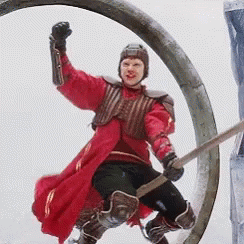

Click here to find your Hogwarts house!

For all those who did not attend Hogwarts during their youth or for curious muggles, you too can now find out what house you belong in!
Chudley Cannons' New Keeper: Ronald Weasley

The Chudley Cannons just annouced yesterday that they have recruited a new keeper, Ronald Weasley, after their previous keeper retired. Weasley has been a long-term fan of the Cannons and stated in an interview that being able to play with them would be a dream come true. He has been playing Quidditch since he was still a student at Hogwarts and comes from a family of Quidditch players. In fact, rumours have it that Ginny Weasley, Ronald's younger sister, will be the Wimbourne Wasps' subsitute chaser for this upcoming season since their previous chaser will not be playing this year due to an injury. Who knows, if all goes well the Weasley's may have two professional Quidditch players in the family.
50th Anniversary of defeating You-Know-Who
50 years ago on this exact day, the most powerful dark wizard the world had ever seen was defeated by the one and only Harry Potter. Every year, we celebrate the peaceful world we now live in but we also mourn the loss of those that lost their lives fighting for our safety.